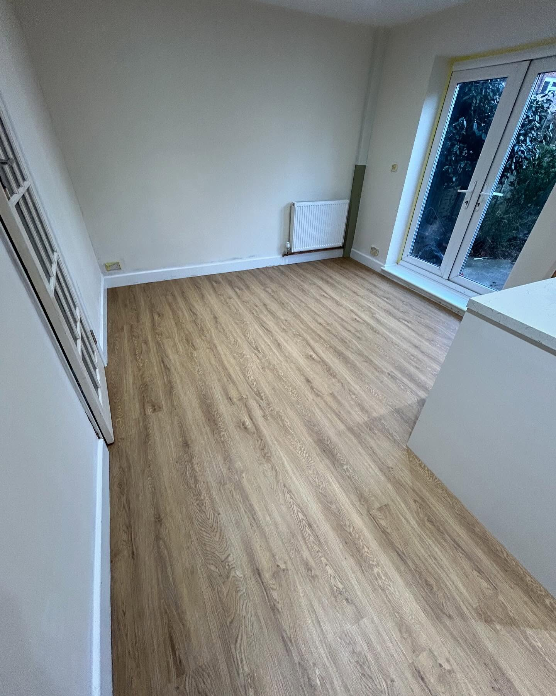

What to Know about Marrocco's
A Foundation of Quality
This project was a conceptual redesign aimed at elevating the digital identity of a premier Sussex flooring specialist. Moving away from the cluttered layouts typical of the construction industry, I focused on a "Gallery-First" approach. The goal was to let the craftsmanship speak for itself, using a clean, industrial-modern aesthetic that reflects the precision required in high-end floor installation.

Structural Minimalism
By implementing a grid system inspired by architectural blueprints, I created a user experience that feels both sturdy and sophisticated. The design language utilizes a monochromatic palette with deep slate accents to mirror materials like polished concrete and luxury oak. This demonstrates my ability to take a "tough" industry and give it a polished, luxury digital finish that appeals to high-value residential and commercial clients.
Texture and Tone
The primary challenge was translating the tactile nature of flooring—hardwood grains, stone textures, and carpet weaves—into a flat digital screen. I utilized large-scale, high-definition imagery paired with "breathing" whitespace to ensure the site never feels heavy. This project highlights my skill in using visual hierarchy to guide a user from initial inspiration through to a professional call-to-action.